2月5号下午，CZ6184，A380的公务舱，19:50降落在北京首都机场。 也许是我已经默认这是last year in Beijing，也可能是北京今天破天荒的好天气，总之是在飞机从平流层下降，穿过对流层后，看到漫天的城市灯光，莫名有些感动，就像是丈夫加班回家时看到的住宅楼里自己家那一层的窗户里透出来的灯光一样。...
Lecture 12. Sums of independent r.v.'s; Covariance and correlation 独立随机变量和，协方差与相关性
6.431
Lecture 13. Conditional expectation and variance revisited; Sum of a random number of independent r.v.'s 条件期望与条件方差复习；随机数个独立随机变量和
6.431
Lecture 14. Introduction to Bayesian inference 贝叶斯统计推断导论
6.431
Lecture 15. Linear models with normal noise 正态噪声的线性模型
**Lecture 15. Linear models with normal noise 正态噪声的线性模型** #Courses/MITx/6.431 1. Lecture 15 overview and slides In this lecture we focus on an important...
6.431
Lecture 16. Least mean squares (LMS) estimation 最小均方估计
6.431
Lecture 19. The Central Limit Theorem (CLT) 中心极限定理
6.431
Lecture 21. The Bernoulli process 伯努利过程
18.6501x
Recitation 23: Hypothesis Test for Linear Regression
18.6501x
(Optional) Recitation 1. Modes of Convergence 收敛性的模式
18.6501x
(Optional) Recitation. Distance measures between distributions
18.6501x
Lecture 10. Other Methods of Estimation: Method of Moments and M-Estimation 其他估计方法：矩方法和M-估计
18.6501x
Lecture 11. Introduction to Parametric Hypothesis Testing 参数假设检验导论
#Courses/MITx/18.6501x 1. Goals of Unit 4 2. Introduction to Parametric Hypothesis Testing 参数假设检验导论 Objectives 目标 At the end of this lecture, you will be able...
18.6501x
Lecture 12. The Wald Test and Likelihood Ratio Test -Wald检验与似然比检验
18.6501x
Lecture 13. The T-test T检验
18.6501x
Lecture 14. Multiple Hypothesis Testing 多重假设检验
18.6501x
Lecture 15. Goodness of Fit Test for Discrete Distributions 对离散分布的拟合优度检验
18.6501x
Lecture 18. Introduction to Bayesian Statistics 贝叶斯统计导论
18.6501x
Lecture 4. Parametric Estimation and Confidence Intervals 参数估计与置信区间
#Courses/MITx/18.6501x 1. Parametric Estimation and Confidence Intervals 参数估计与置信区间 Objectives 目标 At the end of this lecture, you will be able to Distinguish...
18.6501x
Lecture 5. Confidence Intervals and Delta Method 置信区间与delta方法
18.6501x
Lecture 6. Measures of Distance Between Probability Distributions 测量概率分布的距离
18.6501x
Lecture 7. Computing the Maximum Likelihood Estimator 计算极大似然估计量
18.6501x
Lecture 8. Examples of Maximum Likelihood Estimators 极大似然估计量的例子
18.6501x
Lecture 9. Statistical Properties of the MLE 极大似然估计量的统计性质
18.6501x
Recitation: M-Estimation
#Courses/MITx/18.6501x **1. M-Estimation**
18.6501x
Recitation: Method of Moments 详述：矩方法
18.6501x
Recitation: T-test
6.86x
Lecture 1. Introduction to Machine Learning 机器学习导论
18.6501x
Lecture 1. What is statistics 什么是统计
18.6501x
Lecture 2. Probability Redux 概率论复习
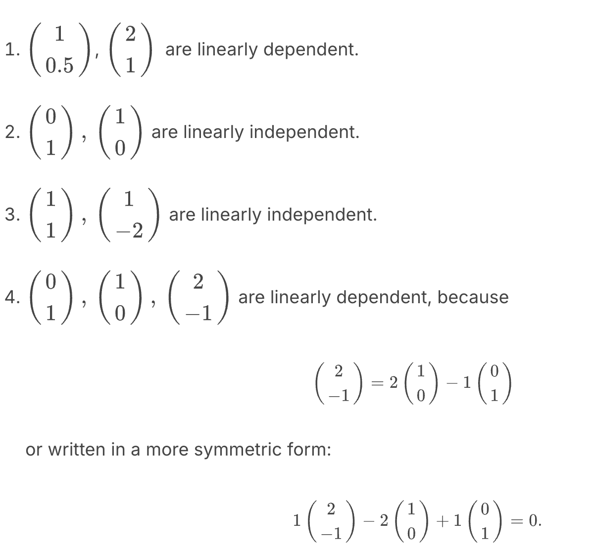
18.6501x
Lecture 21. Linear Regression 2 线性回归2
#Courses/MITx/18.6501x **1. Objectives** 目标 **Multivariate Linear Regression** 多元线性回归 At the end of this lecture, you will be able to Write down the...
18.6501x
Lecture 3. Parametric Statistic Models 参数统计模型
6.86x
Lecture 8. Introduction to Feedforward Neural Networks 前馈神经网络导论
18.6501x
MITx 18.6501x Fundamentals of Statistics | 统计学基础
6.431
MITx 6.431x Probability - The Science of Uncertainty and Data | 概率论
6.86x
MITx 6.86x Machine Learning with Python-From Linear Models to Deep Learning | Python机器学习
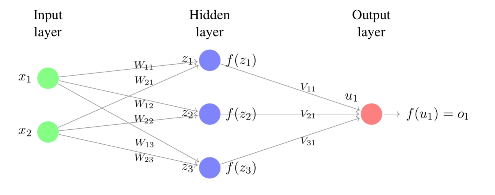
6.86x
Project 3: Digit recongition (Part 2) 数字识别
**Project 3: Digit recongition (Part 2) 数字识别** #Courses/MITx/6.86x 1. 用numpy写一个两层的前馈神经网络 模型结构： 3. Activation Functions The first step is to design the...
18.6501x
[Lecture 20] Linear Regression 1 线性回归1
6.431
[Lecture 18] Inequalities, convergence, and the Weak Law of Large Numbers 不等式，收敛性与弱大数定律
6.431
[Lecture 20] An introduction to classical statistics 经典统计导论
MITx MicroMasters Program in Statistics and Data Science
从5月到8月，这三个月几乎所有的周末和工作日闲暇时间都献给了这两门课，我果然还是too young too simple sometimes naive，天真的以为『老子概率统计学得很好啊这不是随便刷吗』。概率那门课还好，但统计确实恼火，在知乎上看参与了MIT这个项目课程制作的一个博士说18.6501原型是数学系的课，怪不得充斥着大量的证明和渐进理论。好处是上完课之后再看一些论文里涉及到概率统计相关的公式和理论就觉得so easy啦。
我很少在意绩效，指望『一两个傻逼就对一个人的整体工作作出一个评价』这件事本身就充满着统计学上的滑稽和荒谬（unbias but large variance）。但这次是为了想转去tt而必须有一个相对好点的绩效，所以结果还是对我预期的规划造成了一些不可控的影响。老张已经提前去了北京，而我现在只能重新去看北京的职位——甚至也在开始看外面的机会了。
这时候想起了在6.431的第一节课上，Professor说的一句话，Let's face it - Life is uncertain。
这一年听NewJeans最多，也成为了NewJeans的粉，但很可惜这一年也是NewJeans命途多舛的一年。年度歌曲是「ditto」，这一年又听了几百遍。「ditto」自带的东亚校园伤痛文学情绪在这一年里一直贯穿在我的生活心理状态中，常常在上班途中和出差的飞机上听着「ditto」突然沉默。如果看24年新发行的歌里听得最多的，大概是「Supernatural」。New Jack Swing的律动和流行式的旋律让我经常反复重播。
然而最让我无力的大概是时间的线性增长。古川流老贼沉迷打麻将不再续凉宫，生活大爆炸在freestyle的吉他慢板主题曲中落下帷幕，生物股长放了两年牧又合体，京阿尼今年的灾难带走了好几个我熟悉的人名以至于我重新看2006年的凉宫的时候不忍心看字幕的staff出现他们的名字。只能默念几遍，Que sera sera，一切都会过去。
Suppose that $X,Y$ , and $Z$ are independent random variables with unit variance. Furthermore, $\mathbf E[X]=0$ and $\mathbf E[Y]=\mathbf E[Z] = 2$ . Then, 求解 $\text{Co}v(XY, XZ) = ?$
It is known that for a standard normal random variable $X$ , we have $E[X^3] = 0, E[X^4] = 3, E[X^5] =0, E[X^6] = 15$. Find the correlation coefficient between $X$ and $X^3$ . Enter your answer as a number.
Lecture 13. Conditional expectation and variance revisited; Sum of a random number of independent r.v.'s 条件期望与条件方差复习；随机数个独立随机变量和
**Lecture 13. Conditional expectation and variance revisited; Sum of a random number of independent r.v.'s 条件期望与条件方差复习；随机数个独立随机变量和**
#Courses/MITx/6.431
1. Lecture 13 overview and slides
This lecture explains that the conditional expectation and variance can be viewed, more abstractly, as random variables, and presents some of their properties, concluding with an application to the calculation of the mean and variance of the sum of a random number of random variables.
The random variable $Q$ is uniform on $[0,1]$ . Conditioned on $Q=q$ , the random variable $X$ is Bernoulli with parameter $q$. Then, $E[X|Q]$ is equal to:
16. Mean of the sum of a random number of random variables
当N是一个随机变量时，随机数个变量和 $Y = X_1+X_2+…+X_N$ 也是一个随机变量。
这一页的PPT使用了两个方法来计算 $E[Y]$。
全期望公式；
迭代期望定律
⠀最后的结果都是:
$$
\mathbf E[Y] = \mathbf E[N]·\mathbf E[X]
$$
17. Variance of the sum of a random number of random variables
18. Exercise: Second generation offspring
Every person has a random number of children, drawn from a common distribution with mean 3 and variance 2. The numbers of children of each person are independent. Let $M$ be the number of grandchildren of a certain person. Then:
Lecture 14. Introduction to Bayesian inference 贝叶斯统计推断导论
**Lecture 14. Introduction to Bayesian inference 贝叶斯统计推断导论**
#Courses/MITx/6.431
1. Lecture 14 overview and slides
In this lecture, we start by discussing the numerous domains in which inference is useful. We then develop the conceptual framework of Bayesian inference, and review the various forms of the Bayes rule. We discuss possible ways of arriving at a point estimate based on the posterior distribution, and present the relevant performance metrics, namely, the probability of error for hypothesis testing problems and the mean squared error for estimation problems.
10. Exercise: Discrete unknown and continuous observation
11. Continuous parameter, continuous observation
12. Exercise: Continuous unknown and observation
Let $\Theta$ and $X$ be jointly continuous nonnegative random variables. A particular value $x$ of $X$ is observed and it turns out that $f_{\Theta|X}(\theta|x) = 2e^{-2\theta}$, for $\theta \ge 0$ .
The following facts may be useful: for an exponential random variable $Y$ with parameter $\lambda$ , we have $E[Y]=1/\lambda$ and $Var(Y) = 1/\lambda$ .
这道题是已经告诉了后验分布是一个指数分布，求MAP和LMS。
The LMS estimate (conditional expectation) of $\Theta$:
Lecture 15. Linear models with normal noise 正态噪声的线性模型
**Lecture 15. Linear models with normal noise 正态噪声的线性模型**
#Courses/MITx/6.431
1. Lecture 15 overview and slides
In this lecture we focus on an important special case of inference problems in which the random variables of interest are normal and are related through linear relations. We show that the posterior distribution is also normal and examine how we can calculate the posterior mean and variance. We illustrate the methodology through a progression of increasingly complex examples, including the problem of estimating a trajectory on the basis of multiple noisy measurements.
Some of the material in this lecture is covered in Example 8.3 on page 415 and page 421, and on pages 480-482 of the textbook.
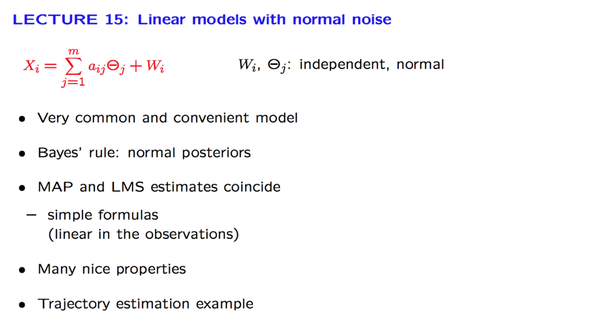
2. Recognizing normal PDFs
3. Exercise: Recognizing normal PDFs
4. Normal unknown and additive noise
5. Exercise: Normal unknown and additive noise
Exercise: Normal unknown and additive noise
TBC
6. The case of multiple observations
7. Exercise: Multiple observations
8. Exercise: Multiple observations, more general model
Lecture 16. Least mean squares (LMS) estimation 最小均方估计
**Lecture 16. Least mean squares (LMS) estimation 最小均方估计**
#Courses/MITx/6.431
1. Lecture 16 overview and slides
In this lecture we focus on the conditional expectation estimator. We show that it minimizes both the conditional and the unconditional mean squared estimation error. We develop some its mathematical properties and also illustrate the calculation of the mean squared error.
Let $\Theta$ be the bias of a coin, i.e., the probability of Heads at each toss. We assume that $\Theta$ is uniformly distributed on [0, 1]. Let $K$ be the number of Heads in 9 independent tosses.
By performing some fancy and very precise measurements on the structure of that particular coin, we determine that $\Theta = 1/3$. Find the LMS estimate of $K$ based on $\Theta$ .
As in the previous exercise, let $\Theta$ be the bias of a coin, i.e., the probability of Heads at each toss. We assume that $\Theta$ is uniformly distributed on [0, 1]. Let $K$ be the number of Heads in 9 independent tosses. We have seen that the LMS estimate of $K$ is $\mathbf E[K|\Theta = \theta] = n\theta$.
Find the conditional mean squared error $\mathbf E[(K -\mathbf E[[K|\Theta - \theta])^2|\Theta = \theta]$ if $\theta = 1/3$.
The material in this lecture is covered in ~Section 5.4~ of the text.
Note: In all of the numerical examples in this lecture, one can of course bypass the normal table and use an online tool, such as the one found ~here~ or ~here~. Note also that such tools also allow you to go backwards, from the value of $\Phi(x)$ to the value of $x$ .
In this lecture we introduce the Bernoulli process, which consists of a sequence of independent trials. We study various associated random variables (e.g., number of successes, arrival time of the th success, time between consecutive successes, etc.). We also discuss the merging and splitting of Bernoulli arrival streams.
Let $X_1, … ,X_n$ be i.i.d. with some unknown distribution $\mathbf{P}$ and an associated parameter $\mu^*$ on a sample space $E$. We make no modeling assumption that $\mathbf{P}$ is from any particular family of distributions.
An M-estimator $\widehat \mu$ of the parameter $\mu^*$ is the argmin of an estimator of a function $\mathcal{Q}(\mu)$ of the parameter which satisfies the following:
$\mathcal{Q}(\mu) = \mathbb{E} [\rho(X, \mu)]$ for some function $\rho: E \times \mathcal M \rightarrow \mathbb R$ where $\mathcal M$ is the set of all possible values of the unknown true parameter $\mu^*$;
$\mathcal{Q}(\mu)$ attains a unique minimum at $\mu = \mu^*$ in $\mathcal M$. That is, $\arg\min_{\mu\in\mathcal M}\mathcal Q(\mu) = \mu^*$.
⠀In general, the goal is to find the loss function $\rho$ such that $\mathcal{Q}(\mu) = \mathbb{E} [\rho(X, \mu)]$ has the properties stated above.
Note that the function $\rho(X, \mu)$ is in particular a function of the random variable $X$ and the expectation in $\mathbb{E} [\rho(X, \mu)]$ is to be taken against the true distribution $\mathbf P$ of $X$, with associated parameter value $\mu^*$.
Because $\mathcal Q(\mu)$ is an expectation, we can construct a (consistent) estimator of $\mathcal Q(\mu)$ by replacing the expectation in its definition by the sample mean.
Median as a Minimizer
这道题很复杂
首先是median of 连续随机变量X的定义为 $med(X) \in \mathbb R$:
$$
P(X > \text{med}(X)) = P (X < \text{med}(X)) = \frac{1}{2}
Let $\mathbf X_1, … , \mathbf X_n$ be i.i.d. random vector in $\mathbb R^k$ with some unknown distribution $\mathbf P$ with some associated parameter $\vec \mu^*\in\mathbb R^d$ on some sample space $E$. Let $\mathcal Q(\vec \mu) = \mathbb E[\rho(\mathbf X, \vec\mu)]$ for some function $\rho: E \times \mathcal M \rightarrow \mathbb R$ where $\mathcal M$ is the set of all possible values of the unknown true parameter $\vec\mu^*$.
Then the matrices $\mathbf J$ and $\mathbf K$ are defined as
In one dimension, i.e. $d=1$, the matrices reduce to the following:
Let $(E, \{\mathbf P_\theta\}*{\theta\in\Theta})$ denote a statistical model associated to a statistical experiment $X_1, …, X_n \stackrel{\text{iid}}{\sim} \mathbf P*{\theta^*}$ where $\theta^*\in\Theta$ is the true parameter. Assume that $\Theta\subset \mathbb R^d$ for some $d \geq 1$. Let $m_k{(\theta)} := \mathbf E[X^k]$ where $X \sim \mathbf P_\theta$. $m_k{(\theta)}$ is referred to as the $k$-th moment of $\mathbf P_\theta$ . Also define the moments map:
statistic: a function that can be computed from the data. 是一个函数，可以从数据中计算出的函数。
statistical test: is an statistic whose output is always either 0 or 1 , and like an estimator, does not depend explicitly on the value of true unknown parameter. 是一个输出永远为0或1的统计量。并且与估计量一样，statistical test并不显式依赖于未知参数的真实值。
8. Errors of a test 假设的错误类型
练习题
Testing the Support of a Uniform Variable: Type 1 Error of a Test
Testing the Support of a Uniform Variable: Type 2 Error of a Test
TBC
9. Level and asymptotic level 水平与渐进水平
练习题
Testing the Support of a Uniform Variable: Level and Threshold
Testing the Support of a Uniform Variable: Determine the Threshold
s
10. Building a test from a confidence interval 从置信区间构建一个试验
Let $X_1,…,X_n \sim^{iid}\mathbf P_{\theta^*}$ , and consider the associated statistical model $(E,\{\mathbf P_\theta\}*{\theta\in\mathbb R^d} )$. Suppose that $\mathbf P*\theta$ is a discrete probability distribution with pmf given by $p_\theta$ .
In its most basic form, the likelihood ratio test can be used to decide between two hypotheses of the following form:
In the setting of multiple testing, we can control the two following metrics for false significance:
Family-wise error rate (FWER) : the probability of making at least one false discovery, or type I error;
False discovery rate (FDR) : the expected fraction of false significance results among all significance results.
⠀Family-wise error rate (FWER)
For a series of tests in which the $i$ th test uses a null hypothesis $H_0^i$ , let the total number of each type of outcome be as follows:
Then the family-wise error rate (FWER) is the probability of making at least one false discovery, or type I error;
$$
\text{FWER} = \mathbf P(V\geq 1).
$$
where $V$ is the total number of type I errors as in the table above, i.e., $V=\sum_{i=1}^{m_0}\Psi_i$ where $\{\Psi\}$ is the set of $m_0$ tests for which $H_0$ is true.
In scenarios in which any false claims of discovery may lead to serious consequences, such as for drug approval, we want to control $\text{FWER}$.
$\text{FWER}$ with no corrections
Recall from the lecture the paired test in which treatment effects are measured on 100 variables for 1000 people, and the treatment itself is a placebo (of being given water). If we perform $m$ independent tests each at significant level $\alpha$, then the $\text{FWER}$ is
In other words, if we set the significance level of each test without taking into account the large number of tests performed, it is highly likely that the series of tests will lead to at least one false discovery. This often leads to puzzling claims such as water has treatment effect on important health parameters, or eating pizza reduces the risk of cancer.
False Discovery Rate (FDR)
Sometimes, controlling $\text{FWER}$ (the probability of making one or more false discoveries) may be too strict for any discovery to be reported. Instead, we can then control the expected proportion of false discoveries among all discoveries made, the false discovery rate (FDR).
Recall $N_1$ is the total number of discoveries made (the total number of null hypotheses rejected), and $V$ is the number of false discoveries (the number of null hypotheses that were falsely rejected). Hence $V \leq N_1$ and $V/N_1$ is a ratio that is always between 0 and 1. If no null hypotheses were rejected, i.e. if $N_1 = 0$, we define the ratio $V/N_1$ to be zero to avoid a division by zero.
The false discovery rate (FDR) is
$$
\text{FDR} = \mathbb E\left[\frac{V}{N_1}\right]
$$
FDR versus FWER (TBC)
Compared to $\text{FWER}$, $\text{FDR}$ has higher power . Put another way, $\text{FWER}$ is stricter than $\text{FDR}$.
Let us examine this by considering the trivial scenario where all null hypotheses are true. In this case, any rejected null hypothesis must also be falsely rejected, hence . If any null hypothesis was rejected, then , or if none was rejected, then .
Recall the is the probability that one or more null hypotheses were falsely rejected. In this scenario, this is the same as the probability that one or more null hypotheses were rejected, since any rejection is a false rejection. We can see now that if one or more null hypotheses were rejected, then , and so
Now consider the general case when some null hypotheses may be false. This time, when , we only know that . Define an indicator varible which takes value when . Then
5. The Bonferroni method to control FWER
有很多Lecture来不及写进来了。
6. The Benjamini Hochberg to control the FDR
Benjamini-Hochberg Correction
The Benjamini-Hochberg method guarantees $\text{FDR} < \alpha$ for a series of $m$ independent tests. The procedure is as follows:
Sort the $p$-values in increasing order $p^{(1)} \leq p^{(2)} \leq ...\leq p^{(i)} \leq ... \leq p^{(m)}$. • Find the maximum $k$ such that
$$
p^{(k)} \leq \frac{k}{m}\alpha
$$
Reject all of $H^{(0)}_0,H^{(1)}_0, …, H^{(k)}_0$ .
For example, the table below shows the $p$-values from 5 hypothesis tests in an experiment in increasing order. We compute the adjusted p-value and compare it with significance threshold of 5%, to decide whether to reject the null hypothesis:
Lecture 15. Goodness of Fit Test for Discrete Distributions 对离散分布的拟合优度检验
**Lecture 15. Goodness of Fit Test for Discrete Distributions** 对离散分布的拟合优度检验
#Courses/MITx/18.6501x
1. Objectives
At the end of this lecture, you will be able to do the following:
Understand the difference between parameter estimation, parametric hypothesis testing, and goodness of fit testing.
Know when and how to apply a goodness of fit test for discrete distributions.
Understand the categorical distribution , compute probabilities associated with it, and know how to compute likelihoods for a categorical distribution.
Use the maximum likelihood estimator for the categorical distribution.
⠀在本讲座结束时，您将能够做到以下几点：
理解参数估计、参数假设检验和拟合优度检验之间的区别。
了解何时以及如何应用离散分布的拟合优度检验。
理解类别分布，计算与之相关的概率，并知道如何计算类别分布的似然函数。
使用类别分布的最大似然估计量。
2. Introduction to Goodness of Fit Tests
Recap of Parametric Hypothesis Testing: The Uniform Statistical Model
这道题做错了，需要复习
Goodness of Fit Tests: Motivation 拟合优度检验：动机
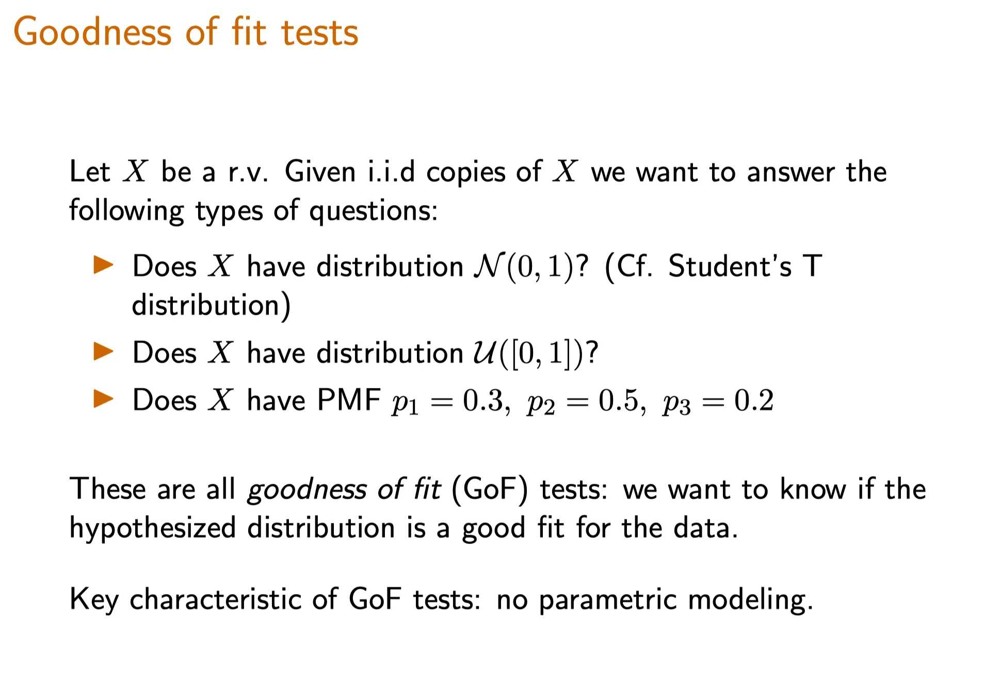
Intuition for Goodness of Fit Tests(TBD)
In the topic goodness of fit testing, we want to decide whether our data can be modeled by a specific type of distribution (e.g., uniform, Gaussian, Poisson). In practice, a useful tool for making such a decision is to use a histogram of the data set.
A histogram for a sample data set is shown below. The -axis, which represents the sample space, is divided into the intervals for all . The bar over the interval represents how many data points took values in that interval.
Concept Check: Terminology(TBD)
3. The Probability Simplex of Discrete Distributions 离散分布的概率单纯形
The probability simplex in , denoted by , is the set of all vectors (note that we are using subscripts for vector indices for simplicity) such that
where denotes the vector . Equivalently, in more familiar notation,
4. Goodness of Fit Test - Discrete Distributions
The Goodness of Fit Hypothesis Test for Discrete Distributions（一道练习题，TBD）
The Goodness of Fit Test: Categorical Likelihoods
我们尝试写出似然函数，那么首先需要写出PMF of X。
multinomial是binomial的扩展形式。所以这里用到了一个小trick，目的是把iff X = a_j的PMF变形为一个连乘形式，所以用到了指示函数。
然后对n个样本的概率连乘，就写出了似然函数。
Multinomial Distribution （TBD，内容很多）
The Multinomial Distribution with $K$ modalities (or equivalently $K$ possible outcomes in a trial) is a generalization of the binomial distribution. It models the probability of counts of the $K$ possible outcomes of the experiment in $n'$ i.i.d. trials of the experiment.
It is parameterized by the parameters $n', p_1, p_2, …, p_K$ where
$n'$ is the number of i.i.d trials of the experiment;
$p_i$ is the probability of observing outcome $i$ in any trial, and hence the $p_i$'s satisfy for all $p_i \ge 0$, and .
Let and note that .
The multinomial distribution can be represented by a random vector to represent the number of instances of the outcome . Note that . The multinomial pmf for all such that , , and is given by
Categorial (Generalized Bernoulli) Distribution and its Likelihood
The multinomial distribution, when specialized to $n' = 1$ for any $K$ gives the categorical distribution . When $K=2$ and the two outcomes are 0 and 1 the categorical distribution is the Bernoulli distribution, and for any $K \ge 2$ the categorical distribution is also known as the generalized Bernoulli distribution .
The categorical distribution, therefore, models the probability of counts of the possible outcomes of a discrete experiment in a single trial. Since the total count is equal to 1 (only one trial), we can use a random variable to represent the outcome of the trial. This means the sample space of a categorical random variable is
5. Maximum Likelihood Estimator for the Categorical Distribution
上一节我们已经写出了似然函数，那么现在需要求解MLE。
首先一个最容易犯的错误就是将其取log后求偏导，这时候算出来的p_j 为无穷大。
→ 为什么？因为没有考虑到一个限制条件 sum p_j = 1。所以我们要将最后一项变形为 1 - sum^K-1 p_j。
Recall that the Beta distribution in $x$ is defined as the distribution with support [0, 1] and pdf
$$
C(\alpha, \beta)x^{\alpha-1}(1-x)^{\beta-1}
$$
where $\alpha$ and $\beta$ are parameters that satisfy $\alpha >0, \beta >0$. Here, $C(\alpha, \beta)$ is a normalization constant that does not depend on $x$ .
The Beta distribution can take many shapes depending on the chosen parameters $\alpha$ and $\beta$. As a result, the highest point (mode) of this distribution can vary wildly. Due to the different overall shapes depending on parameter values, there isn't also a consistent formula for the mode. Compute the correct mode for each of the parameter sets. (A mode of the distribution is the value(s) of $x$ where the pmf attains its highest value in the entire support of the distribution.)
You may use the variables $\alpha$ and $\beta$ in your answer. If there is no unique mode, enter -1. Note that it is possible for the mode to have a “probability" of infinity, which would be a mode if this happens only once.
Case 2: $\alpha \le 1 \ and \ \beta \ge1, \ \text{but excluding } \alpha = \beta =1$
这种情况下，整个函数是单调递减的，那么众数出现在x的最小值0。
Case 3: $\alpha \ge 1 \ and \ \beta \le1, \ \text{but excluding } \alpha = \beta =1$
这种情况下，整个函数是单调递增的，那么众数出现在x的最小值1。
Case 4: $\alpha =1 \ and \ \beta=1$
此时函数变为固定值 $C(\alpha, \beta)$。在定义域内都是众数。
Case 5: $\alpha > 1 \ and \ \beta > 1$
这是最标准的形式，对原函数取Log后求导，解得：
$$
x = \frac{\alpha-1}{\alpha+\beta—2}
$$
这是标准形式下beta分布众数的通解。
**Beta Distribution Probability Example**
Suppose that you have a coin with unknown probability $p$ of landing heads; assume that coin toss outcomes are i.i.d Bernoulli random varaiables. You flip it 5 times and it lands heads thrice. Our parameter of interest is $p$. Compute the likelihood function for the first five tosses $X_1, X_2, …, X_5$.
A statistic is any measurable function of the sample. An estimator of $\theta$ is a statistic $\hat \theta_n = \hat \theta_n(X_1, …, X_n)$ whose expression does not depend on $\theta$ .
Recall that a realization of a random variable $X$ is the value that it takes when we observe $X$. For example, if $X \sim Ber(1/2)$ and we observe the event $X=1$, then $x=1$ is the realization (observed value) of the random variable $X$.
Let $\mathcal{L}, \mathcal{J}$, be some 95% and 98% asymptotic confidence intervals respectively for the unknown parameter $p$. Which of the following statements is true?
Lecture 6. Measures of Distance Between Probability Distributions 测量概率分布的距离
#Courses/MITx/18.6501x
1. Motivation
2. Objective 目标
Total Variation Distance, Kullback-Leibler (KL) divergence, and the Maximum Likelihood Principle
At the end of this lecture, you will be able to do the following:
Describe properties of the total variation distance and Kullback-Leibler (KL) divergence .
Compute the total variation distance and KL divergence between two distributions.
Derive the maximum likelihood principle using the KL divergence.
Define and compute the likelihood of a discrete distribution.
⠀The Unit 3 slides below, which are for the next 5 lectures , are also available in the resource tab at the top of this course site.
3. Unit Overview
Goals of the Next 5 Lectures
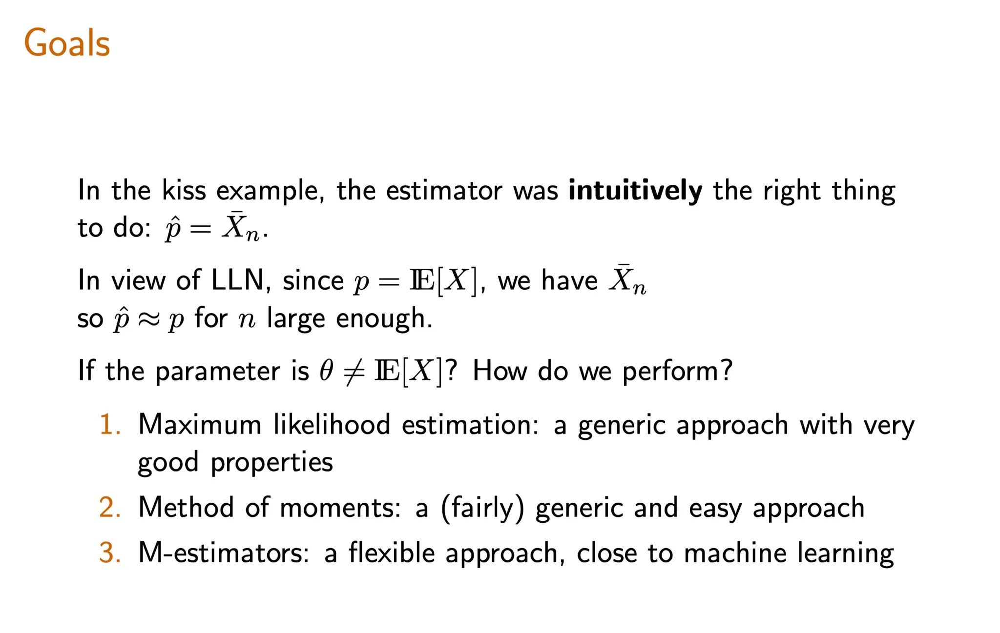
4. Introduction to Total Variation Distance
Interpreting Total Variation Distance
Recall from lecture that the total variation distance between two probability measures $\mathbf P_\theta$ and $\mathbf {P}_{\theta^\prime}$ with sample space $E$ is defined by
Let $X_1, …, X_n \sim^{iid}\mathbf P_{\theta^*}$ where $\theta^*$ is an unknown parameter. You construct a statistical model $(E,\{\mathbf P_\theta\}_{\theta\in\mathbb R})$ for your data. By analyzing your data, you are able to produce an estimator $\hat\theta$ such that the distributions $\mathbf P_{\hat\theta}$ and $\mathbf{P}_{\theta^*}$ are close in total variation distance. More precisely, you know that
9. Motivation and Introduction to the Kullback-Leibler (KL) Divergence
Definition of Kullback-Leibler (KL) Divergence
离散形式
Let $\mathbf{P}$ and $\mathbf{Q}$ be discrete probability distributions with pmfs $p$ and $q$ respectively. Let's also assume $\mathbf{P}$ and $\mathbf{Q}$ have a common sample space $E$. Then the KL divergence (also known as relative entropy ) between $\mathbf{P}$ and $\mathbf{Q}$ is defined by
Lecture 8. Examples of Maximum Likelihood Estimators 极大似然估计量的例子
#Courses/MITx/18.6501x
1. Examples of Maximum Likelihood Estimators
Objectives
At the end of this lecture, you will be able to compute the maximum likelihood estimator in a variety of models including: Bernoulli, Poisson, Gaussian, Uniform.
You will also learn about mixtures of Gaussians as a flexible statistical model and you will be able to apply the Expectation-Maximization (EM) algorithm to compute the maximum likelihood estimator in this model.
2. Examples of Maximum Likelihood Estimators: Bernoulli Model
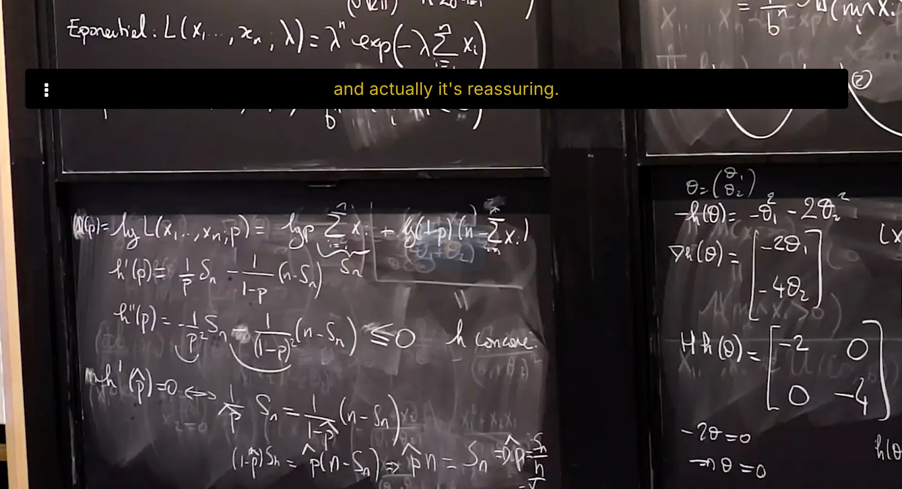
Maximum Likelihood Estimator of a Bernoulli Statistical Model I
TBC
3. Examples of Maximum Likelihood Estimators: Poisson Model
Maximum Likelihood Estimator of a Poisson Statistical Model
TBC
4. Maximum Likelihood Estimator of Gaussian Statistical Model
Maximum Likelihood Estimator of Gaussian Statistical Model: the mean
Maximum Likelihood Estimator of Gaussian Statistical Model: the Variance
5. Maximum Likelihood Estimator of Uniform Statistical Model
并不是所有likelihood都可以按照取Log——求导——等于0来求极大值的。
有些函数是不可导（不可微）函数，比如均匀分布的likelihood。
这时候我们是通过画图找极值点。
练习题TBC
6. Maximum Likelihood Estimator of Mixture of Gaussians Statistical Model
We can easily generalize the mixture of Gaussians model to a mixture of any distributions. These generalizations are useful in cases where observations come from heteregenous populations but each sub-population does not follow a Gaussian distribution. In this exercise we consider the mixture of two exponential distributions.
The Massachussetts Registry of Motor Vehicles (RMV) mainly provides two services: issuing new driver's licenses and renewing old ones. All these services are provided by getting in line to meet with an RMV clerk who processes these requests. The time (in minutes) it takes a clerk to process a new driver's license follows an exponential distribution with unknown parameter $\lambda$ and the time it takes to renew an old driver's license follows an exponential distribution with unknown parameter $4\lambda$. On average, one quarter of all customers are new drivers, against three quarters that come to the RMV to renew their old drivers licenses.
Let $X$ denote the processing time of a random customer.
Lecture 9. Statistical Properties of the MLE 极大似然估计量的统计性质
#Courses/MITx/18.6501x
1. Statistical properties of the MLE
Objectives
At the end of this lecture, you will be able to do the following:
Derive the maximum likelihood estimator for the uniform statistical model and prove its consistency.
Recognize that the maximum likelihood estimator is consistent.
Compute the Fisher information of a statistical model
Establish asymptotic normality of a maximum likelihood estimator and compute its asymptotic variance using Fisher information
⠀
2. Consistency of Maximum Likelihood Estimator
Review: Definition of MLE
Consistency of the Maximum Likelihood Estimator
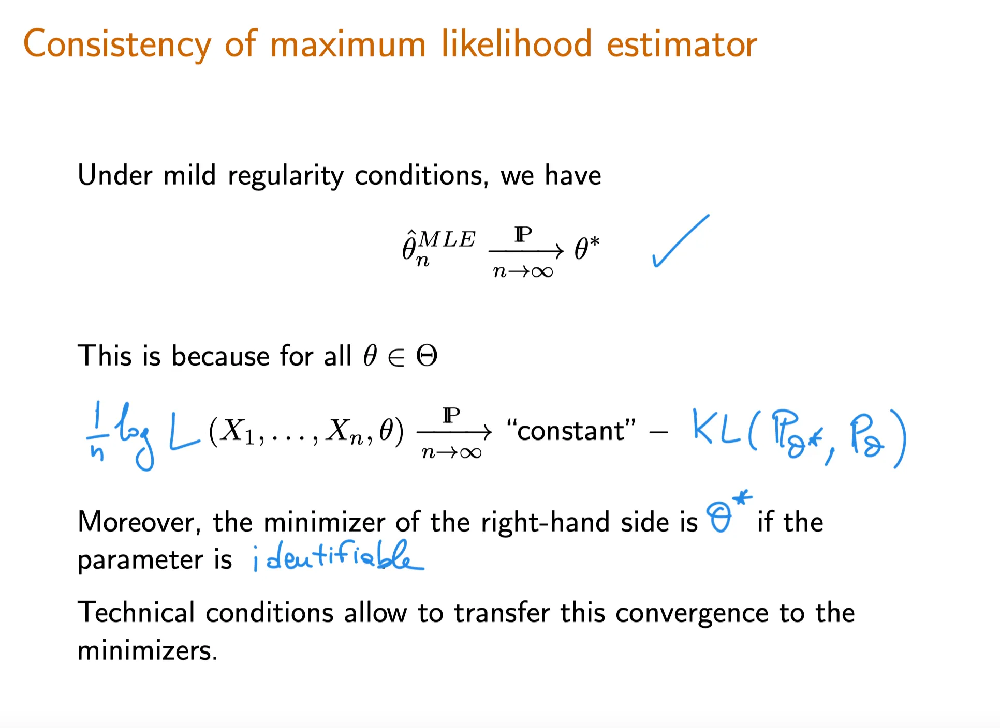
Consistency of MLE
Given i.i.d samples and an associated statistical model the maximum likelihood estimator of is a consistent estimator under mild regularity conditions (e.g. continuity in of the pdf almost everywhere), i.e.
Fisher Information of the Binomial Random Variable
tbc
Fisher Information of a Poisson Random Variable
tbc
6. Asymptotic normality of the maximum likelihood estimator
revise
⠀The asymptotic normality of the ML estimator , which will be discussed in the upcoming video, depends upon the Fisher information. For a one-parameter model (like the exponential and Bernoulli), the asymptotic normality result will say something along the lines of following: that the asymptotic variance of the ML estimator is inversely proportional to the value of Fisher information at the true parameter of the statistical model. This means that if the value of Fisher information at is high, then the asymptotic variance of the ML estimator for the statistical model will be low.
understand the goal of machine learning from a movie recommender example
understand elements of supervised learning, and the difference between the training set and the test set
understand the difference of classification and regression - two representative kinds of supervised learning
3. What is Machine Learning?
Machine learning as a discipline aims to design, understand, and apply computer programs that learn from experience (i.e. data) for the purpose of modelling, prediction, and control. We will start with prediction as a core machine learning task.
There are many types of predictions that we can make. We can predict outcomes of events that occur in the future such as the market, weather tomorrow, the next word a text message user will type, or anticipate pedestrian behavior in self driving vehicles, and so on.
We can also try to predict properties that we do not yet know. For example, properties of materials such as whether a chemical is soluble in water, what the object is in an image, what an English sentence translates to in Hindi, whether a product review carries positive sentiment, and so on.
Welcome to 18.6501x! This class offers an in-depth introduction to the theoretical foundations of statistical methods that are useful in many applications. The goal is to understand the role of mathematics in the research and development of efficient statistical methods.
At the end of this class, you will be able to
1 From a real-life situation, formulate a statistical problem in mathematical terms ;
2 Understand the role of mathematics in the design and analysis of statistical methods;
3Select appropriate statistical methods for your problem;
4 Understand the implications and limitations of various methods .
⠀Text book recommendation: This course does not follow a textbook, but a good reference is *All of Statistics: A Concise Course in Statistical Inference*, by Larry Wasserman.
4. Why statistics
5. Statistics, Data science, and Probability
6. Statistics and modelling
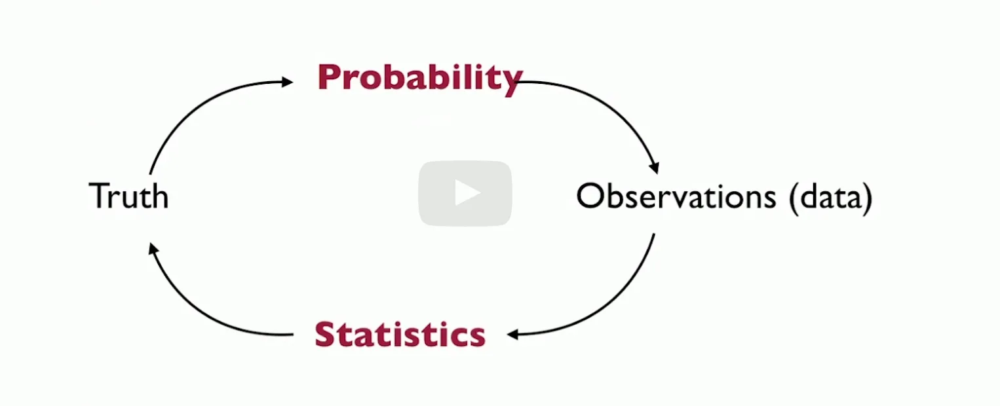
7. About this course
What this course is about
Understand the mathematical underpinning of statistical methods.
How to give quantitative statements from modeling assumptions.
Discover mathematical phenomena arising from statistics.
Develop a framework that allows to give mathematical statements about new models.
What this course is not about
How to set up a statistical model for complicated real world examples;
Recall the statements of the (strong/weak) law of large numbers and the central limit theorem and know to apply these for large sample sizes.
(Optional:) Apply Hoeffding's inequality to the sample means of bounded i.i.d. random variables.
Recall the probability density function and properties of the Gaussian distribution .
Use Gaussian probability tables to obtain probabilities and quantiles .
Distinguish between convergence almost surely（几乎处处收敛） , convergence in probability（依概率收敛） and convergence in distribution（依分布收敛） , understand that these notions are from strongest to weakest.
Determine convergence of sums and products of sequences that converge almost surely or in probability.
Apply Slutsky's theorem to the sum and product of a sequence that converges in distribution and another that converges in probability to a constant.
Use the continuous mapping theorem to determine convergence of sequences of a function of random variables.
⠀
2. Two important probability tools 两个重要的概率工具
1. lectures
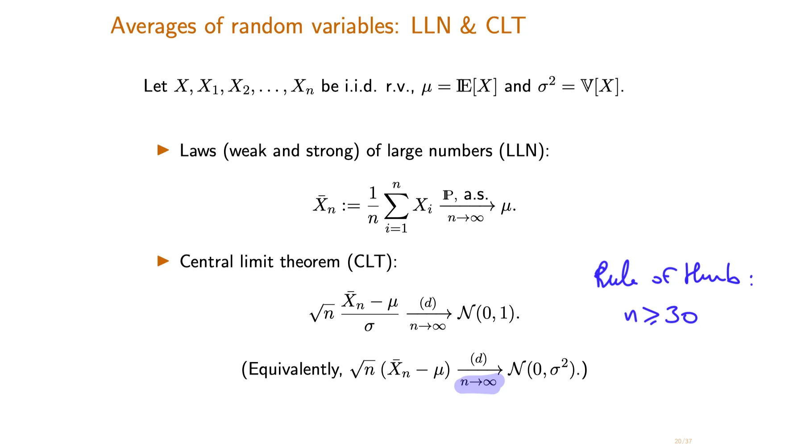
rule of thumb: 经验法则
TBC
==🔴Averages of random variables: Laws of Large Numbers and Central Limit Theorem==
Let $X, X_1, X_2, …, X_n$ be i.i.d. random variables, with $\mu = \mathbb{E}[X]$ and $\sigma^2 = \text{Var}[X]$ .
where the convergence is in probability (as denoted by $\text{P}$ on the convergence arrow) and almost surely (as denoted by $\text{a.s.}$ on the arrow) for the weak and strong laws respectively.
parametric model: A statistical model$(E, \{P_{\theta}\}_{\theta\in\Theta})$ is parametric if all parameters $\theta \in \Theta$ can be specified by a finite number of unknowns.
Equivalently, this means that $\Theta$ is a subset of $\mathbb R^m$. In particular, if $\Theta \subset \mathbb R^m$, then $P_\theta$ is uniquely specified by the $m$ entries of the vector $\theta$.这意味着，参数空间由有限维向量指定。
Lecture 8. Introduction to Feedforward Neural Networks 前馈神经网络导论
**Lecture 8. Introduction to Feedforward Neural Networks 前馈神经网络导论**
#Courses/MITx/6.86x
1. Unit 3 Overview
At the end of this unit, you will be able to
Implement a feedforward neural networks from scratch to perform image classification task.
Write down the gradient of the loss function with respect to the weight parameters using back-propagation algorithm and use SGD to train neural networks.
Understand that Recurrent Neural Networks (RNNs) and long short-term memory (LSTM) can be applied in modeling and generating sequences.
Implement a Convolutional neural networks (CNNs) with machine learning packages.
2. Objectives
Introduction to Feedforward Neural Networks
At the end of this lecture, you will be able to
Recognize different layers in a feedforward neural network and the number of units in each layer.
Write down common activation functions such as the hyperbolic tangent function , and the rectified linear function (ReLU) .
Compute the output of a simple neural network possibly with hidden layers given the weights and activation functions .
Determine whether data after transformation by some layers is linearly separable, draw decision boundaries given by the weight vectors and use them to help understand the behavior of the network.
3. Motivation
Motivation to Neural Networks
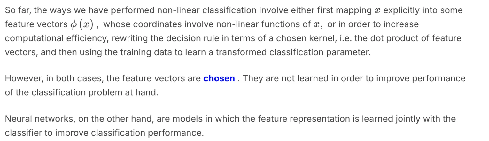
4. Neural Network Units
5. Introduction to Deep Neural Networks
一道练习题：Representation Power of Neural Networks: 2
答案：
这道题直接去推导反而比较痛苦，用德摩根定律（De Morgan's Law）来做比较方便：
德摩根定律：
第一定律： NOT(A AND B) = NOT(A) OR NOT(B)
第二定律：NOT(A OR B) = NOT(A) AND NOT(B)
德摩根定律的推导：
NAND门：NAND(A,B) = NOT(A AND B)
NOR门：NOR(A, B) = NOT(A OR B)
NOT(x) = NAND(x, x) = NOT(x AND x)
所以这道题里：
第一个图想表达的是：NAND(x1, x1) = NOT(x1 AND x1) = NOT(x1)
第二个图想表达的是：NAND(NAND(x1, x1) AND NAND(x2, x2)) = NAND(NOT(x1) and NOT(x2)) = NOT(NOT(x1 OR x2)) = OR(x1, x2)
Welcome to 18.6501x Fundamentals of Statistics. This mathematics course offers an introduction to the theoretical foundations of statistical methods that are useful in many applications. The goal is to understand the role of mathematics in the research and development of efficient statistical methods. At the end of this class, you will be able to do the following:
1 From a real-life situation, formulate a statistical problem in mathematical terms;
2 Understand the role of mathematics in the design and analysis of statistical methods;
3 Select appropriate statistical methods;
4 Understand the implications and limitations of various methods.
⠀You will expand your statistical knowledge to not only include a list of methods, but also the mathematical principles that link these methods together, equipping you with the tools you need to develop new ones.
This course does not follow a textbook, but a good reference *All of Statistics: A Concise Course in Statistical Inference*, by Larry Wasserman.
Syllabus 课程大纲
Unit 0. Brief Prerequisite Reviews, Homework 0, and Project 0 先修条件
Unit 1. Introduction to statistics 统计学导论
[[Lecture 1. What is statistics 什么是统计]]
[[Lecture 2. Probability Redux 概率论复习]]
Unit 2. Foundation of Inference 推断基础
[[Lecture 3. Parametric Statistic Models 参数统计模型]]
[[Lecture 4. Parametric Estimation and Confidence Intervals 参数估计与置信区间]]
[[Lecture 5. Confidence Intervals and Delta Method 置信区间与delta方法]]
Unit 3. Methods of Estimation 估计方法
[[Lecture 6. Measures of Distance Between Probability Distributions 测量概率分布的距离]]
[[Lecture 7. Computing the Maximum Likelihood Estimator 计算极大似然估计量]]
[[Lecture 8. Examples of Maximum Likelihood Estimators 极大似然估计量的例子]]
[[Lecture 9. Statistical Properties of the MLE 极大似然估计量的统计性质]]
[[Lecture 10. Other Methods of Estimation: Method of Moments and M-Estimation 其他估计方法：矩方法和M-估计]]
(Optional Ungraded Material) Extension to Multivariate Statistics
Unit 4.Parametric Hypothesis testing 参数假设检验
[[Lecture 11. Introduction to Parametric Hypothesis Testing 参数假设检验导论]]
[[Lecture 12. The Wald Test and Likelihood Ratio Test -Wald检验与似然比检验]]
Unit 6. Further topics on random variables 随机变量高级主题
In this unit we discuss a number of topics on random variables:
Methods for calculating the distribution of a function of one or more random variables, including the special case of the sum of two independent random variables
The concepts of covariance and correlation between two random variables
An abstract perspective under which conditional expectations are viewed as random variables
[[Lecture 11. Derived distributions 导出分布]]
[[Lecture 12. Sums of independent r.v.'s; Covariance and correlation 独立随机变量和，协方差与相关性]]
[[Lecture 13. Conditional expectation and variance revisited; Sum of a random number of independent r.v.'s 条件期望与条件方差复习；随机数个独立随机变量和]]
Unit 7. Bayesian Inference 贝叶斯推断
In this unit, we focus on Bayesian inference, including both hypothesis testing and estimation problems.
a) We apply the Bayes rule to find the posterior distribution of an unknown random variable given one or multiple observations of related random variables.
b) We discuss the most common methods for coming up with a point estimate of the unknown random variable (Maximum a Posteriori probability estimate, Least Mean Squares estimate, and Linear Least Mean Squares estimate).
c) We consider the question of performance analysis, namely, the calculation of the probability of error in hypothesis testing problems or the calculation of the mean squared error in estimation problems.
d) To illustrate the methodology, we pay special attention to a few canonical problems such as linear normal models and the problem of estimating the unknown bias of a coin.
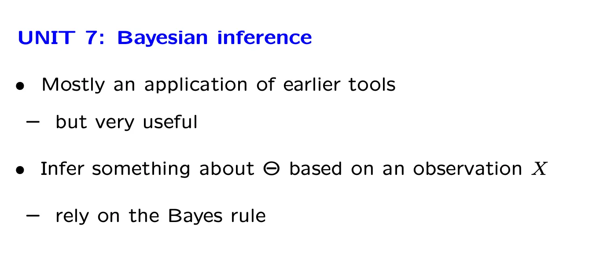
[[Lecture 14. Introduction to Bayesian inference 贝叶斯统计推断导论]]
[[Lecture 15. Linear models with normal noise 正态噪声的线性模型]]
[[Lecture 16. Least mean squares (LMS) estimation 最小均方估计]]
Unit 8.Limit theorems and classical statistics 极限理论与经典统计
In this unit, we introduce some useful inequalities and develop some limit theorems (the weak law of large numbers and the central limit theorem). We also use these tools in the context of a brief introduction to the conceptual framework and some basic methods of classical statistics.
[[\[Lecture 18\] Inequalities, convergence, and the Weak Law of Large Numbers 不等式，收敛性与弱大数定律]]
[[Lecture 19. The Central Limit Theorem (CLT) 中心极限定理]]
[[\[Lecture 20\] An introduction to classical statistics 经典统计导论]]
Unit 9. Bernoulli and Poisson processes 伯努利与泊松过程
In this unit, we introduce and study in some detail the properties of two basic random processes (Bernoulli and Poisson) that can be used to describe random arrivals over time.
Unit overview slide: ~[\[clean\]](https://courses.edx.org/asset-v1:MITx+6.431x+2T2025+type@asset+block/lectureslides_U09-overview-slide.pdf)~
一个6.036的课程笔记（by Andrew Lin): [[Andrew Lin的个人网站-MIT数学博士，写了不少课程notes]] 其他关于6.86x的学习资料：~6.86x的学习资料~
Syllabus 课程大纲
Unit 0. Brief Prerequisite Reviews, Homework 0, and Project 0 先修条件
Unit 1. Linear Classifiers and Generalizations (2 weeks) 线性分类器和泛化
[[Lecture 1. Introduction to Machine Learning 机器学习导论]] [[Lecture 2. Linear Classifier and Perceptron 线性分类器与感知机]] [[Lecture 3 Hinge loss, Margin boundaries and Regularization 合页损失, 边际约束和正则化]] [[Lecture 4. Linear Classification and Generalization 线性分类器与一般化]]
Unit 2. Nonlinear Classification, Linear regression, Collaborative Filtering (2 weeks) 非线性分类器，线性回归，协同过滤
[[Lecture 5. Linear Regression 线性回归]] [[Lecture 6. Nonlinear Classification 非线性分类]] [[Lecture 7. Recommender Systems 推荐系统]]
Unit 3. Neural networks (2.5 weeks) 神经网络
[[Lecture 8. Introduction to Feedforward Neural Networks 前馈神经网络导论]]
The first step is to design the activation function for each neuron. In this problem, we will initialize the network weights to 1, use ReLU for the activation function of the hidden layers, and use an identity function for the output neuron. The hidden layer has a bias but the output layer does not. Complete the helper functions in neural_networks.py, including rectified_linear_unit and rectified_linear_unit_derivative, for you to use in the NeuralNetwork class, and implement them below.
4. Training the Network
Forward propagation is simply the summation of the previous layer's output multiplied by the weight of each wire, while back-propagation works by computing the partial derivatives of the cost function with respect to every weight or bias in the network. In back propagation, the network gets better at minimizing the error and predicting the output of the data being used for training by incrementally updating their weights and biases using stochastic gradient descent.
We are trying to estimate a continuous-valued function, thus we will use squared loss as our cost function and an identity function as the output activation function. f(x) is the activation function that is called on the input to our final layer output node, and is the predicted value, while is the actual value of the input. When you're done implementing the function train (below and in your local repository), run the script and see if the errors are decreasing. If your errors are all under 0.15 after the last training iteration then you have implemented the neural network training correctly.
$$
C =\frac{1}{2} * (y - \hat{a})^2
$$
$$
f(x) = x
$$
You'll notice that the train function inherits from NeuralNetworkBase in the codebox below; this is done for grading purposes. In your local code, you implement the function directly in your Neural Network class all in one file. The rest of the code in NeuralNetworkBase is the same as in the original NeuralNetwork class you have locally.
import numpy as np
import math
"""
==================================
Problem 3: Neural Network Basics
==================================
Generates a neural network with the following architecture:
Fully connected neural network.
Input vector takes in two features.
One hidden layer with three neurons whose activation function is ReLU.
One output neuron whose activation function is the identity function.
"""
## 定义ReLu函数及其导数，注意都是标量形式
def rectified_linear_unit(x):
""" Returns the ReLU of x, or the maximum between 0 and x."""
TODO
return(max(x,0))
def rectified_linear_unit_derivative(x):
""" Returns the derivative of ReLU."""
TODO
derivatives = 0
if x>0:
derivatives = 1
else:
derivatives = 0
return(derivatives)
定义输出激活函数（恒等函数）及其导数，都是标量形式。
def output_layer_activation(x):
""" Linear function, returns input as is. """
return x
def output_layer_activation_derivative(x):
""" Returns the derivative of a linear function: 1. """
return 1
class NeuralNetwork():
"""
Contains the following functions:
-train: tunes parameters of the neural network based on error obtained from forward propagation.
-predict: predicts the label of a feature vector based on the class's parameters.
-train_neural_network: trains a neural network over all the data points for the specified number of epochs during initialization of the class.
-test_neural_network: uses the parameters specified at the time in order to test that the neural network classifies the points given in testing_points within a margin of error.
"""
def __init__(self):
# DO NOT CHANGE PARAMETERS (Initialized to floats instead of ints)
self.input_to_hidden_weights = np.matrix('1. 1.; 1. 1.; 1. 1.')
self.hidden_to_output_weights = np.matrix('1. 1. 1.')
self.biases = np.matrix('0.; 0.; 0.')
self.learning_rate = .001
self.epochs_to_train = 10
self.training_points = [((2,1), 10), ((3,3), 21), ((4,5), 32), ((6, 6), 42)]
self.testing_points = [(1,1), (2,2), (3,3), (5,5), (10,10)]
def train(self, x1, x2, y):
### Forward propagation ###
input_values = np.matrix([[x1],[x2]]) # 2 by 1
# Calculate the input and activation of the hidden layer
## 是否要添加biases? 根据题目的描述，hidden_layer有bias但output没有
hidden_layer_weighted_input = self.input_to_hidden_weights @ input_values + self.biases # TODO (3 by 1 matrix)
rectified_linear_unit_vec = np.vectorize(rectified_linear_unit)
hidden_layer_activation = rectified_linear_unit_vec(hidden_layer_weighted_input)# TODO (3 by 1 matrix)
output = self.hidden_to_output_weights @ hidden_layer_activation# TODO
output_layer_activation_vec = np.vectorize(output_layer_activation)
activated_output = output_layer_activation_vec(output) # TODO
### Backpropagation ###
# Compute gradients
## output loss是平方损失函数，output_layer_error即为输出层误差
output_layer_error = -(y - activated_output) # TODO
## 计算输出层激活函数的导数，虽然值恒为1，但代码要求完整写出来。
output_derivative_vec = np.vectorize(output_layer_activation_derivative)
output_layer_activation_derivative_vec = output_derivative_vec(output)
out_layer_error = np.multiply(output_layer_error, output_layer_activation_derivative_vec)
## 隐藏层激活函数的导数
rectified_linear_unit_derivative_vec = np.vectorize(rectified_linear_unit_derivative)
## 隐藏层误差是损失函数对隐藏层激活值的导数，具体计算等于hidden_to_out_weight的转置 * 输出层误差（因为这里只有一个隐藏层）⊙ 隐藏层激活函数的导数
## 反向传播误差 = hidden_to_out_weight.T * 输出层误差
## 隐藏层误差 = 反向传播误差 ⊙ 隐藏层激活函数导数
hidden_layer_error = np.multiply((self.hidden_to_output_weights.T @ output_layer_error),
rectified_linear_unit_derivative_vec(hidden_layer_weighted_input)) # TODO (3 by 1 matrix)
bias_gradients = hidden_layer_error # TODO
hidden_to_output_weight_gradients = output_layer_error @ hidden_layer_activation.T # TODO
input_to_hidden_weight_gradients = hidden_layer_error @ input_values.T# TODO
# Use gradients to adjust weights and biases using gradient descent
self.biases = self.biases - self.learning_rate*bias_gradients# TODO
self.input_to_hidden_weights = self.input_to_hidden_weights - self.learning_rate*input_to_hidden_weight_gradients# TODO
self.hidden_to_output_weights = self.hidden_to_output_weights - self.learning_rate*hidden_to_output_weight_gradients # TODO
def predict(self, x1, x2):
input_values = np.matrix([[x1],[x2]])
# Compute output for a single input(should be same as the forward propagation in training)
hidden_layer_weighted_input = self.input_to_hidden_weights @ input_values + self.biases # TODO
relu_activation_vec = np.vectorize(rectified_linear_unit)
hidden_layer_activation = relu_activation_vec(hidden_layer_weighted_input) # TODO
output = self.hidden_to_output_weights @ hidden_layer_activation # TODO
output_layer_activation_vec = np.vectorize(output_layer_activation)
activated_output = output_layer_activation_vec(output)# TODO
return activated_output.item()
#
# # Run this to train your neural network once you complete the train method
def train_neural_network(self):
for epoch in range(self.epochs_to_train):
for x,y in self.training_points:
self.train(x[0], x[1], y)
#
# # Run this to test your neural network implementation for correctness after it is trained
def test_neural_network(self):
for point in self.testing_points:
print("Point,", point, "Prediction,", self.predict(point[0], point[1]))
if abs(self.predict(point[0], point[1]) - 7*point[0]) < 0.1:
print("Test Passed")
else:
print("Point ", point[0], point[1], " failed to be predicted correctly.")
return
x = NeuralNetwork()
x.train_neural_network()
# UNCOMMENT THE LINE BELOW TO TEST YOUR NEURAL NETWORK
x.test_neural_network()
class NeuralNetwork(NeuralNetworkBase):
def predict(self, x1, x2):
input_values = np.matrix([[x1],[x2]])
# Compute output for a single input(should be same as the forward propagation in training)
hidden_layer_weighted_input = self.input_to_hidden_weights @ input_values + self.biases # TODO
relu_activation_vec = np.vectorize(rectified_linear_unit)
hidden_layer_activation = relu_activation_vec(hidden_layer_weighted_input) # TODO
output = self.hidden_to_output_weights @ hidden_layer_activation # TODO
output_layer_activation_vec = np.vectorize(output_layer_activation)
activated_output = output_layer_activation_vec(output)# TODO
return activated_output.item()
At the end of this lecture, you will be able to do the following:
Understand the goals of regression .
Identify the regression function and know what property of the dependent random variable the regression function is trying to capture as a function of the explanatory variables .
Plot and understand box-and-whisker plots .
Know the linear regression function .
Understand the theoretical and empirical linear regression solutions.
Write the linear regression problem as a noisy linear model .
⠀The Unit 6 slides below, which are for the next 2 lectures , are also available in the resource tab at the top of this course site.
**3. Goals of Regression**
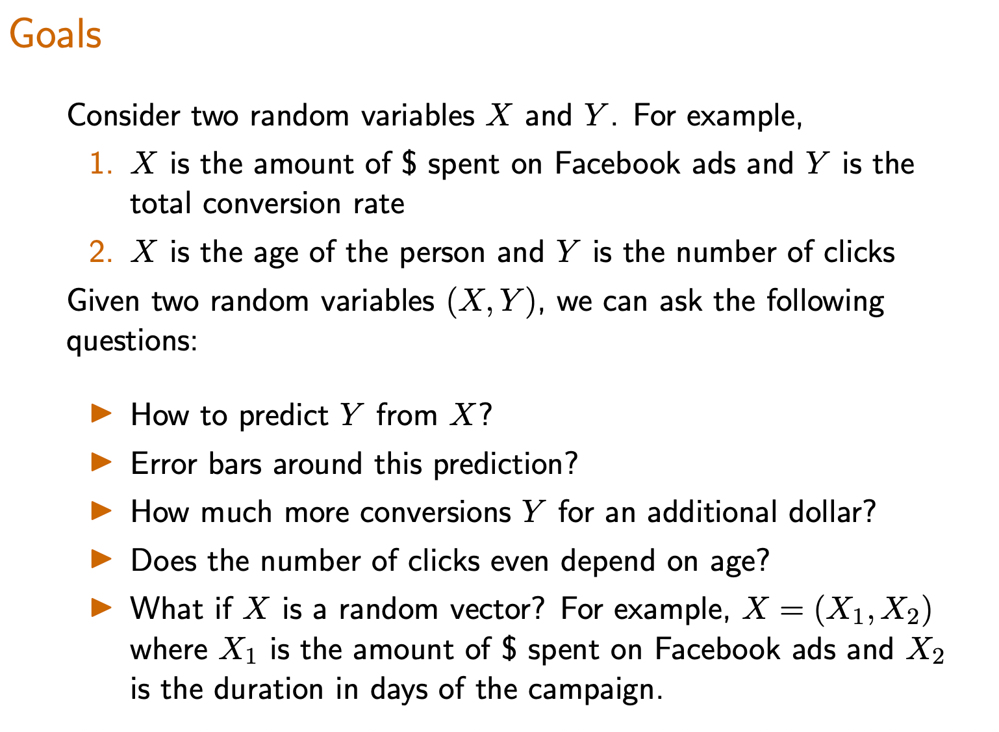
**4. Modeling Assumptions in Regression** 回归的模型假设
Review: Joint, Conditional, and Marginal Distributions
这道题有两个解法，一是按照上一题的结论，可以得到 $\hat Y = \arg\min \mathbb E[(Y-\hat Y)^2\mid X =x] = E[Y] = v(x) = a+bx$
另一种解法是按照定义打开期望（计算方式与上面相同）。
These two exercises verify that the Least Squares Estimator is consistent in the following sense: using the actual distribution on $(X,Y)$ , the true pair $(a,b)$ itself is a least squares estimator.
**8. Probabilistic Analysis of Theoretical Linear Regression** 理论线性回归的概率分析
Derivation of Theoretical Linear Least Squares Regression I
Derivation of Theoretical Linear Least Squares Regression II
**Optimal Theoretical Regression Line**
理论线性回归（theoretical linear regression) 是使线性回归方程与Y的平方偏差期望最小的一条线，即：
[!IMPORTANT]
Let $Z$ be a nonnegative random variable that satisfies $E(Z^4) = 4$. Apply the Markov inequality to the random variable $Z^4$ to find the tightest possible (given the available information) upper bound on $P(Z≥2)$.
[Lecture 20] An introduction to classical statistics 经典统计导论
**[Lecture 20] An introduction to classical statistics 经典统计导论**
#Stats-ML #Courses/MITx/6.431
1. Lecture 20 overview and slides 概览
This lecture provides a brief introduction to the so-called classical (non-Bayesian) statistical methods. Besides presenting the general framework, it includes a discussion of estimation based on sample means, confidence intervals, and maximum likelihood estimation.
| Unit 8. Limit theorems and classical statistics 极限理论与经典统计 | [[\[Lecture 18\] Inequalities, convergence, and the Weak Law of Large Numbers 不等式，收敛性与弱大数定律]] |


 正态分布的矩定义：
正态分布的矩定义： MLE是最好的参数估计方法：虽然三种方法都具有渐进正态性，但MLE的渐进方差是最小的。MLE具有最小的边界：Cramer-Rao Lower Bound.
MLE是最好的参数估计方法：虽然三种方法都具有渐进正态性，但MLE的渐进方差是最小的。MLE具有最小的边界：Cramer-Rao Lower Bound.


 s
s

 alpha 代表了 实际上拒绝了H0的试验，但不应该拒绝H0的试验次数
alpha 代表了 实际上拒绝了H0的试验，但不应该拒绝H0的试验次数


 第一问：
第一问： 局部替代理论是想回答：当“几乎零差异”的时候，检验对这类情况有多敏感？
局部替代理论是想回答：当“几乎零差异”的时候，检验对这类情况有多敏感？


 TBC，这道题挺复杂的。
TBC，这道题挺复杂的。


 不同自由度取值下，卡方分布的PDF:
不同自由度取值下，卡方分布的PDF:

 清晰版：
清晰版：


 答案是：
答案是：